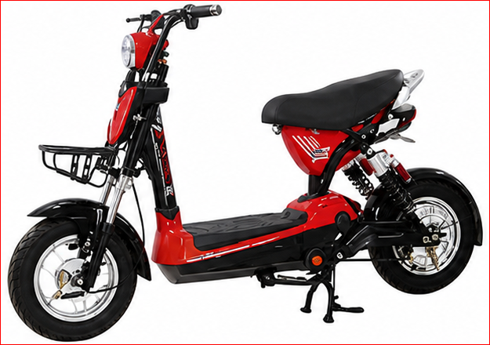
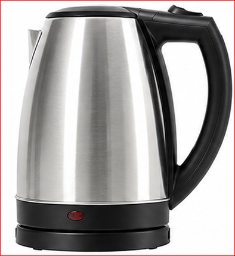
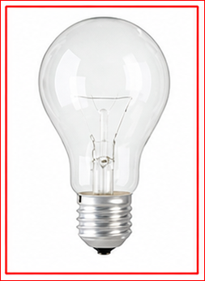
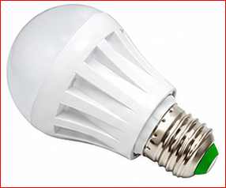
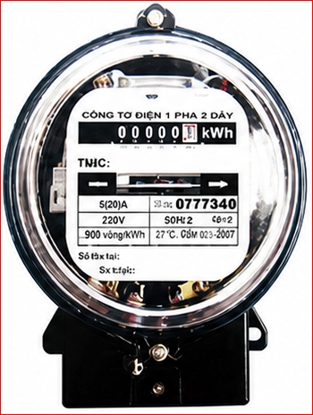

| CHỈ SỐ MỚI | CHỈ SỐ CŨ | HS NHÂN | ĐIỆN TIÊU THỤ | ĐƠN GIÁ | THÀNH TIỀN |
|---|---|---|---|---|---|
| 8.429 | 8.157 | 1 | 272 | ||
| 50 | 1.549 | 77.450 | |||
| 50 | 1.600 | 80.000 | |||
| 100 | 1.858 | 185.800 | |||
| 72 | 2.340 | 168.480 | |||
| Cộng | 272 | 511.730 | |||
| Thuế suất GTGT: 10% | Thuế GTGT | 51.173 | |||
| Tổng cộng tiền thanh toán | 562.903 | ||||
Số tiền viết bằng chữ: Năm trăm sáu mươi hai nghìn chín trăm linh ba đồng.
Bảng bên ghi một số nội dung trong Hoá đơn tiền điện giá trị gia tăng (GTGT) của Công ty điện lực. Em hãy cho biết ý nghĩa của các số liệu trong bảng.
Khi đặt hiệu điện thế \(U\) vào hai đầu của một mạch tiêu thụ điện, dưới tác dụng của lực điện, các điện tích tự do trong mạch điện chuyển dời có hướng tạo ra dòng điện. Ta đã biết công của lực điện trong trường hợp này được tính bằng công thức: \(A=qU\).
Nếu \(t\) là thời gian dòng điện chạy trong mạch thì cường độ dòng điện là \(I = \frac{q}{t}\), thì công của lực điện là:
\(A=UIt\)
Ở đây \(A\) là số đo năng lượng điện mà đoạn mạch nhận được (tiêu thụ) từ nguồn điện và được gọi là năng lượng điện tiêu thụ của đoạn mạch. Do đó:
Năng lượng điện tiêu thụ của đoạn mạch bằng công của lực điện thực hiện khi di chuyển các điện tích.
\(W = A = UIt \quad (25.2)\)
Đơn vị của năng lượng điện tiêu thụ là jun, kí hiệu là J.
Dòng điện chạy trong đoạn mạch gây ra các tác dụng khác nhau và khi đó có sự chuyển hoá năng lượng điện tiêu thụ của đoạn mạch thành các dạng năng lượng khác.
Hình 25.1. Một số thiết bị dùng điện

a) Xe đạp điện

b) Ấm đun nước

c) Bóng đèn sợi đốt

d) Bóng đèn LED
Câu hỏi thảo luận
Lời giải:
Ngoài đơn vị Jun, người ta còn dùng đơn vị kilôoát giờ (kW.h) để đo năng lượng điện tiêu thụ. \(1 \text{ kW.h} = 3,6 \cdot 10^3 \text{ kJ}\).
Người ta đo năng lượng điện tiêu thụ bằng một thiết bị gọi là công tơ điện (Hình 25.2). Khi các dụng cụ, thiết bị tiêu thụ năng lượng điện hoạt động thì đĩa của công tơ quay, số chỉ của công tơ tăng dần. Đơn vị của chỉ số trên công tơ là kW.h. Trong đời sống người ta thường gọi 1 kW.h là 1 số điện.

Hình 25.2. Công tơ điện
Công suất tiêu thụ năng lượng điện (gọi tắt là công suất điện) của một đoạn mạch là năng lượng điện mà mạch tiêu thụ trong một đơn vị thời gian:
\(\mathcal{P} = \frac{A}{t} = UI \quad (25.4)\)
Đơn vị của công suất điện là Oát, kí hiệu là W.
Câu hỏi:
Hãy chứng minh rằng \(1 \text{ kW.h} = 3,6 \cdot 10^3 \text{ kJ}\).
Lời giải:
Ta có: \(1 \text{ kW} = 1000 \text{ W}\) và \(1 \text{ h} = 3600 \text{ s}\).
Năng lượng tương ứng với 1 kW.h là: \(1 \text{ kW.h} = 1000 \text{ W} \times 3600 \text{ s} = 3.600.000 \text{ J} = 3.600 \text{ kJ} = 3,6 \cdot 10^3 \text{ kJ}\). (ĐPCM)
Bảng 25.1. Công suất điện của một số thiết bị dùng điện
| Thiết bị | Công suất điện | Thiết bị | Công suất điện |
|---|---|---|---|
| Đèn tuýp LED 1,2 m | 25 W | Tủ lạnh | 100 W |
| Bóng đèn huỳnh quang 1,2 m | 36 W | Máy giặt | 470 W |
| Bóng đèn sợi đốt | 40 W | Nồi cơm điện | 600 W |
| Quạt cây | 55 W | Bàn là | 1000 W |
| Tivi LED 32 inches | 69 W | Điều hòa 9000BTU | 2 638 W |
Nếu trên dụng cụ hoặc thiết bị dùng điện ghi 220 V - 100 W, thì phải hiểu là chỉ khi nào dụng cụ hoặc thiết bị được dùng ở đúng hiệu điện thế \(U = 220 \text{ V}\) (bằng với hiệu điện thế định mức) thì công suất điện của nó mới bằng 100 W. Công suất này được gọi là công suất định mức.
Hoạt động / Thảo luận:
| Đặc điểm | Đèn sợi đốt (220V - 100W) | Đèn LED (220V - 20W) |
|---|---|---|
| Giản đồ phân phối năng lượng | Điện năng 100J -> Ánh sáng 5J, Nhiệt 95J | Điện năng 100J -> Ánh sáng 80J, Nhiệt 20J |
| Thời gian hoạt động | 1 000 h | 30 000 h |
| Giá tiền/bóng | 8.000 đồng | 48.000 đồng |
| Giá tiền điện | 2.000 đồng / kW.h | |
Giả sử trung bình mỗi bóng đèn sử dụng 5 h/ngày, em hãy tính tiền điện phải trả cho từng bóng đèn mỗi tháng và trong 30 000 h, từ đó lập luận để so sánh về hiệu quả kinh tế khi sử dụng hai loại bóng trên.
Lời giải:
Trên nhãn của một ấm điện có ghi 220 V – 1000 W. Sử dụng ấm điện này ở hiệu điện thế 200 V để đun sôi 2 lít nước từ nhiệt độ \(20^\circ\text{C}\). Tính thời gian đun nước. Biết hiệu suất của ấm là 90%, nhiệt dung riêng của nước là \(4 190 \text{ J/kg.K}\), coi điện trở của ấm điện không thay đổi so với khi hoạt động ở chế độ bình thường.
Giải:
Nhiệt lượng cần để đun sôi 2 lít nước (tương đương 2 kg) từ \(20^\circ\text{C}\):
\(Q = mc\Delta t = 2 \times 4190 \times (100 - 20) = 670 400 \text{ J}\)
Hiệu suất của ấm \(H = 90\%\) nên năng lượng điện tiêu thụ của ấm là:
\(A = \frac{Q}{H} = \frac{670 400}{0,9} \approx 744 889 \text{ J}\)
Điện trở của ấm điện:
\(R = \frac{U_{dm}^2}{\mathcal{P}_{dm}} = \frac{220^2}{1000} = 48,4 \ \Omega\)
Từ công thức \(A = \frac{U^2}{R}t\), suy ra thời gian đun nước:
\(t = \frac{A \cdot R}{U^2} = \frac{744 889 \times 48,4}{200^2} \approx 901 \text{ s}\)
Câu 1:
Trên nhãn của bóng đèn 1 có ghi 220 V - 20 W và bóng đèn 2 có ghi 220 V – 10 W. Coi điện trở của mỗi bóng đèn không thay đổi.
Lời giải:
a) Điện trở mỗi đèn: \(R_1 = \frac{U_{dm}^2}{\mathcal{P}_{dm1}} = \frac{220^2}{20} = 2420 \ \Omega\); \(R_2 = \frac{220^2}{10} = 4840 \ \Omega\).
Năng lượng tiêu thụ ở 200V, t=2h=7200s:
\(A_1 = \frac{U^2}{R_1}t = \frac{200^2}{2420} \times 7200 \approx 119008 \text{ J}\)
\(A_2 = \frac{U^2}{R_2}t = \frac{200^2}{4840} \times 7200 \approx 59504 \text{ J}\)
b) Mắc song song ở 220V (đúng định mức): \(\mathcal{P}_{ss} = \mathcal{P}_1 + \mathcal{P}_2 = 20 + 10 = 30 \text{ W}\).
Mắc nối tiếp: \(R_{nt} = R_1 + R_2 = 2420 + 4840 = 7260 \ \Omega\). Tổng công suất: \(\mathcal{P}_{nt} = \frac{U^2}{R_{nt}} = \frac{220^2}{7260} \approx 6,67 \text{ W}\).
c) Phải dùng cách mắc song song. Vì khi mắc song song vào nguồn 220V, hiệu điện thế trên mỗi bóng bằng đúng hiệu điện thế định mức của chúng (220V), nên cả hai sáng bình thường.
Câu 2:
Thông thường, ở nước ta hiệu điện thế mạng điện trong các gia đình, trường học,... là 220 V. Em hãy tìm hiểu về hiệu điện thế định mức, công suất định mức của mỗi thiết bị điện, cách mắc các thiết bị điện dùng trong lớp học của em và thời gian sử dụng trung bình của từng thiết bị mỗi tháng để làm các việc sau: a) Vẽ lại sơ đồ mạch điện; b) Áp dụng giá điện để dự tính tiền; c) Đề xuất phương án tiết kiệm.
Gợi ý: Đây là bài tập thực hành cá nhân/nhóm.
Bài 1:
Một bàn là điện ghi 220V - 1000W được sử dụng ở hiệu điện thế 220V. Trung bình mỗi ngày dùng 1 giờ. Tính tiền điện phải trả trong 30 ngày, biết giá điện là 2000 đồng/1 kW.h.
Lời giải:
Công suất bàn là: \(\mathcal{P} = 1000 \text{ W} = 1 \text{ kW}\).
Thời gian sử dụng trong 30 ngày: \(t = 1 \text{ h/ngày} \times 30 \text{ ngày} = 30 \text{ h}\).
Điện năng tiêu thụ: \(A = \mathcal{P} \cdot t = 1 \text{ kW} \times 30 \text{ h} = 30 \text{ kW.h}\).
Tiền điện: \(T = 30 \times 2000 = 60.000 \text{ đồng}\).
Bài 2:
Một nồi cơm điện ghi 220V - 600W. Khi sử dụng bình thường ở 220V, tính cường độ dòng điện chạy qua điện trở của nồi và điện trở của nó.
Lời giải:
Vì dùng ở \(U = 220\text{V}\) đúng định mức nên \(\mathcal{P} = 600\text{W}\).
Từ \(\mathcal{P} = UI \Rightarrow I = \frac{\mathcal{P}}{U} = \frac{600}{220} \approx 2,73 \text{ A}\).
Điện trở của nồi: \(R = \frac{U}{I} = \frac{U^2}{\mathcal{P}} = \frac{220^2}{600} \approx 80,67 \ \Omega\).
Bài 3:
Hai điện trở \(R_1 = 10 \ \Omega\) và \(R_2 = 20 \ \Omega\) được mắc nối tiếp với nhau vào hiệu điện thế \(U = 12 \text{V}\). Tính công suất tiêu thụ của toàn mạch.
Lời giải:
Vì 2 điện trở mắc nối tiếp nên điện trở tương đương của mạch là: \(R_{td} = R_1 + R_2 = 10 + 20 = 30 \ \Omega\).
Công suất tiêu thụ của toàn mạch: \(\mathcal{P} = \frac{U^2}{R_{td}} = \frac{12^2}{30} = \frac{144}{30} = 4,8 \text{ W}\).